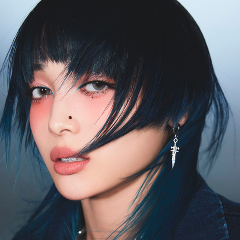
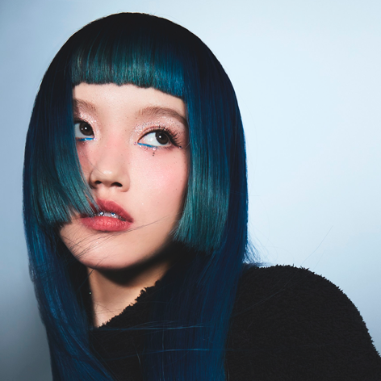
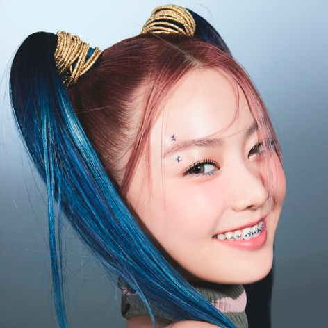
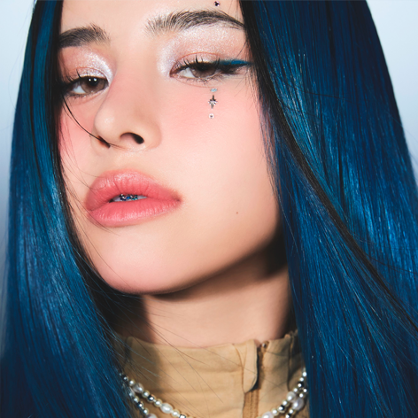
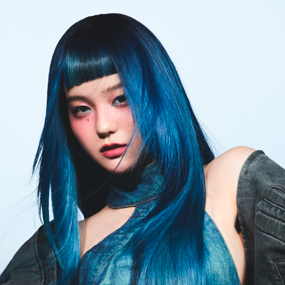
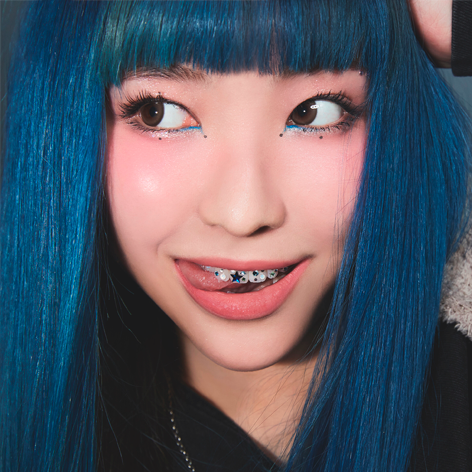
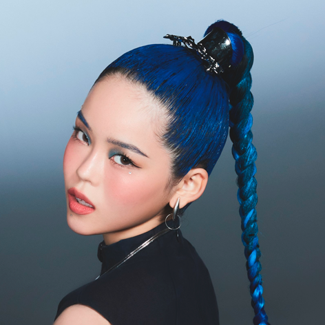

| Nome | Data de Nascimento | Stage Name | Nacionalidade | Signo | Cor representativa | Posições | ||
|---|---|---|---|---|---|---|---|---|
|  | Asaya Jurin (樹林) | 19 de junho de 2002 | Jurin | Japonesa | Gêmeos | Prata | Líder, Dançarina Principal, Rapper Líder e Vocalista Líder | |
|  | Kondou Chisa (ちさ今度) | 17 de janeiro de 2002 | Chisa | Japonesa | Capricórnio | Amarelo | Sub-Líder e Vocalista Principal | |
|  | Sohara Hinata (宗原ひなた) | 11 de junho de 2002 | Hinata | Japonesa | Gêmeos | Azul | Dançarina Principal e Vocalista Guia | |
|  | Amy Harvey (ハーヴィー瑛美) | 18 de dezembro de 20022 | Harvey | Australiana-Japonesa | Sagitário | Roxo | Rapper Principal e Vocalista Guia | |
|  | Ueda Juria (上田純利亜) | 28 de novembro de 2004 | Juria | Japonesa | Sagitário | Laranja | Vocalista principal | |
|  | Kawachi Maya (河地マヤ) | 10 de agosto de 2005 | Maya | Japonesa | Leão | Vermelho | Vocalista Líder e Rapper Líder | |
|  | Akiyama Kokona (秋山心響) | 07 de dezembro de 2005 | Cocona | Japonesa | Sagitário | Verde | Rapper Principal, Vocalista de Apoio e Maknae | |